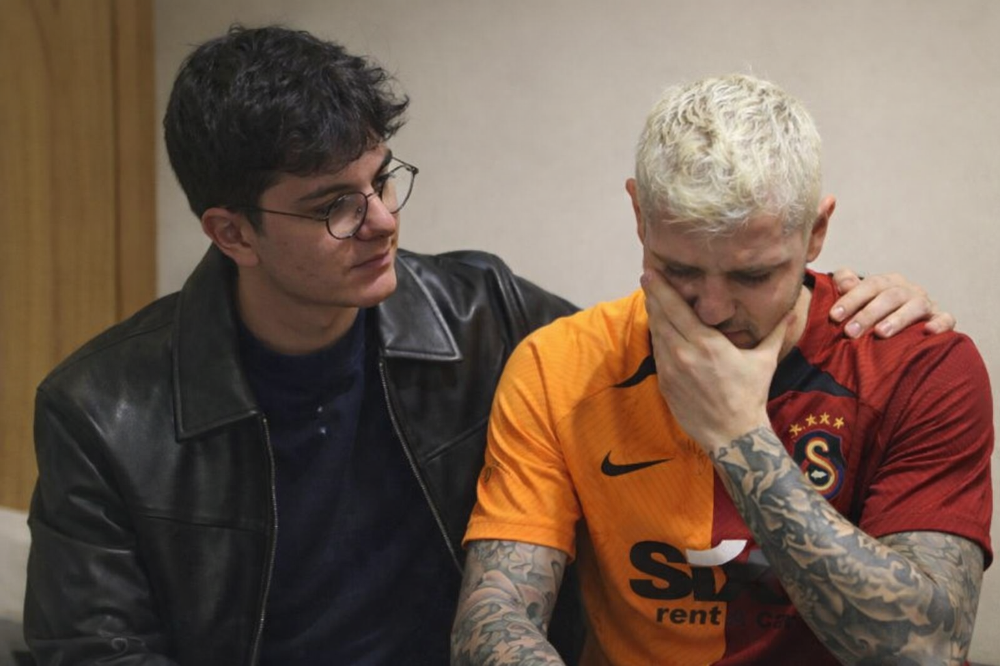

Bana attığın her şarkıyı defalarca dinliyorum evde tekrar tekrar gerekirse de tüm şarkılarına oturup edit yaparım bu video senin için ;)
Bak Alya biliyorum ben hep senle uğraşıyorum şakalar yapıyorum bunları cidden yapmıyorum zaten bunuda biliyosun gülüp geçiyoruz ama yinede bazen farkında olmadan seni kırabiliyorum. Belki normalde olsa takılmazdın ama bu sefer kırıldın bu küçük bişey olsun büyük bişey olsun farketmez asla değer verdiğim birinin kırılmasına izin vermem ne olursa olsun gönlünü alırım. O yüzden özür diliyorum,bende görüyorum bazen gerçekden canını sıkıyor şakalarım daha dikkat edicem olurmu asla kırılmana izin vermem bu kuçücük bişey olsa bile.
Bide seninkini buldum bundan sonra bidaha karşına çıkmıycak hırpaladım biraz, sen benimsin kızım Allah Allah yok içardi filan bundan sonra.
